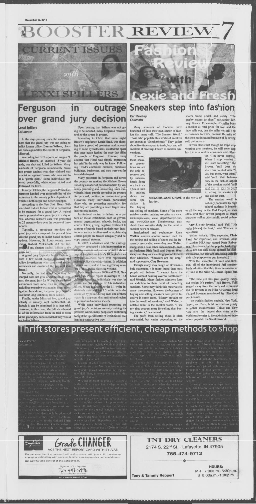

HN HN-942 · December 19, 2014 · Civil Rights & Social Change > Civil Rights Movements & Protests > Marches
Source: Jefferson Booster, p. 7 — original student feature; DOJ's two distinct investigations.
Report: The article describes renewed protests after a grand jury declined to indict officer Darren Wilson, mixing accounts of peaceful demonstrations and property damage. It uses 'trial' loosely in discussing the grand jury.
Assessment: A grand-jury nonindictment is not an acquittal after a jury trial. DOJ's March 2015 findings separately declined federal criminal charges in Brown's shooting while documenting a pattern of unconstitutional policing and municipal-court practices. Both outcomes must be retained.
Identity-review candidate peers: HN-938:Algorithmic
Authentic images retrieved from Hoosier State Chronicles (Indiana State Library). Article crops are located using the archive's own OCR word coordinates and rendered at native crop resolution; article clips are assembled from the archive's own article-block images; page images marked "archive tiles" are stitched from the archive's own tiled page service at its 256-px tile cap; page images marked "issue PDF" are single pages rasterised from the archive's own issue PDF, with the page chosen by matching the headline against the PDF's text layer; page scans are reduced-size access renditions. No images were generated, mocked, or retouched.

Not yet acquired. Queued for provider-specific acquisition testing (see source-acquisition manifest).
URL (preserved verbatim): https://newspapers.library.in.gov/?a=d&d=JFBSTR20141219.1.7
Saved research report: Historical_Newspaper_Event_Research_928-952_2026-10-23.md
Evidence note: A newspaper report means a historical publication made a claim; it does not establish that claim as fact. Contemporary reporting is separated from later scholarly context and our own assessment.